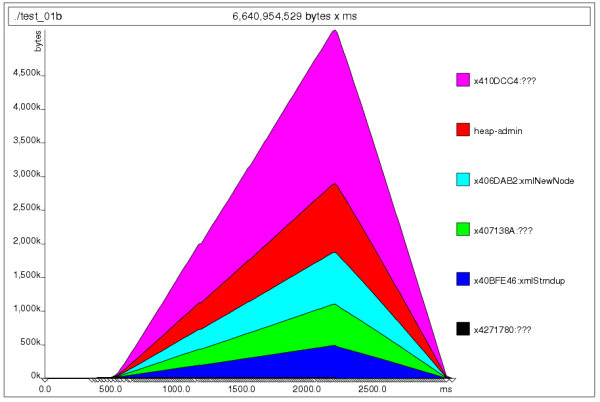
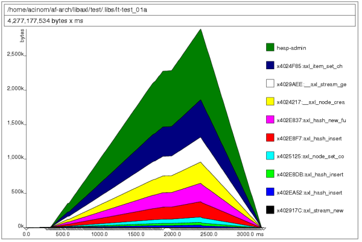

Axl memory usage report for 0.2.5 release
Axl memory usage report for 0.2.5 release
1. Introduction
The following information was gathered through several modifications performed to the LibAxl library, using a machine with a Intel(R) Pentium(R) 4. This report covers the memory profile that the library has and compares that result with the LibXML library.
In also contains a brief about improvements done to the library to reduce execution time, while supporting the same features.
It is in no way a complete library comparison at all, but provides some useful information about the motivations for building LibAxl library and how basic features compares to LibXML.
The implementation reference chosen was LibXML-2.0 (version 2.6.26) mainly because it was used by Af-Arch and Vortex Library.
To produce the memory profiling results used on this report it was used the valgrind tool and its extension to profile heap allocation and memory performance, called massif. It was also used callgrind tool which gives statistical performance information.
The test used for this memory usage report was the following for the case of Axl library results:
#include#include int main (int argc, char ** argv) { axlError ** error; /* top level definitions */ axlDoc * doc = NULL; /* initialize axl library */ if (! axl_init ()) { printf ("Unable to initialize Axl library\n"); return -1; } /* get current doc reference */ doc = axl_doc_parse_from_file ("large.xml", error); if (doc == NULL) return AXL_FALSE; /* cleanup axl library */ axl_end (); /* release the document */ axl_doc_free (doc); return AXL_TRUE; }
For the performance results get for the LibXML-2.0 library, the test code was:
#include#include int main (int argc, char ** argv) { xmlDocPtr doc; /* init libXml */ LIBXML_TEST_VERSION /* load the document */ doc = xmlParseFile ("large.xml"); if (doc == NULL) { printf ("Failed to load the xml document.\n"); return -1; } /* release memory */ xmlFreeDoc (doc); xmlCleanupParser(); return 0; }
The xml file used is a glade file definition that is 650K sized approx.
Test was run using the following command to get memory usage:
bash: ~$ valgrind --leak-check --show-reachable=yes ./test_file
The following command was used to get the memory profiling information for both libraries.
bash: ~$ valgrind --tool=massif ./test_file
Conventions used on this report to identify memory allocations, memory deallocations and total amount of memory used are the following:
(A) = allocations (F) = deallocations (T) = total amount (bytes)
2. Initial status
Last report done, for Axl Library 0.2.1, shows the following data as initial status for memory consumption and runtime performance.
MEMORY CONSUMED BY AXL 0.2.1: LibAxl: (A) 139088 (F) 139088 (T) 1937471 LibXML: (A) 127809 (F) 127809 (T) 4201579
RUNTIME PERFORMANCE BY AXL 0.2.1: test_01a (axl): 0.106ms test_01b (xml): 0.047ms
3. Improve operations performed
Initially, it was tried to implement a stream indexer allowing a fast access to items search on the input stream while doing xml parsing.
Although the result was good enough as an starting point, memory consumption was fired up. This excessive memory consumption makes us to drop this alternative as a way to improve library efficiency.
Then, as a side effect, we found that memcmp operation was extremely inefficient, not by itself, but because the function provides a functionality not required, throwing unexpected consumption results. The function returns how many bytes differs both strings while the required feature mostly required by Axl is to only now if they are equal.
After writing a particular function to perform this job, axl_cmp, the following results was gathered:
RUNTIME PERFORMANCE BY AXL 0.2.5: test_01a (axl): 0.083ms test_01b (xml): 0.050ms
4. Memory consumption
Additionally, several modifications have been applied to the library, mostly to support the mixed API. After doing some optimization, memory consumption found is:
MEMORY CONSUMED BY AXL 0.2.5: LibAxl: (A) 130,146 (F) 130,146 (T) 1,890,427 LibXML: (A) 127,811 (F) 127,811 (T) 4,201,777
Here is the memory profile (produced with massif) for the LibXML library:
And the memory profile for the Axl Library:
 4. Conclusion
This new Axl Library release is faster than previous, reducing execution time from 0.106ms to 0.83ms, while keeping memory usage low. In fact, this release have also reduced memory consumption from 1,937,471 bytes to 1,890,427 bytes.
LibXML is still faster, but consumes far more memory than Axl Library. Memory profiling still shows that Axl Library performs several little allocations, making the heap admin to be bigger than the produced by LibXML.
5. References
- Valgrind Homepage for this profiling tool and its extensions.
- LibXML LibXML homepage, tutorials, references and manuals.